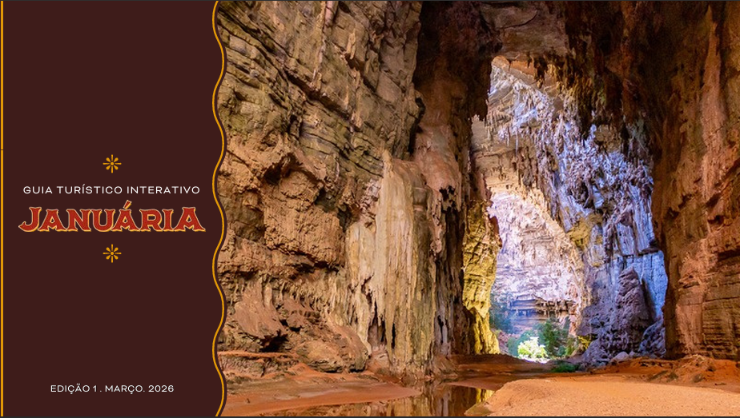

© @viagemkombinada © Prefeitura de Januária
A Prefeitura Municipal de Januária disponibiliza um guia turístico oficial em formato PDF com informações completas sobre atrativos, cultura, gastronomia e serviços turísticos do município.
Acesse o PDF clicando aqui.